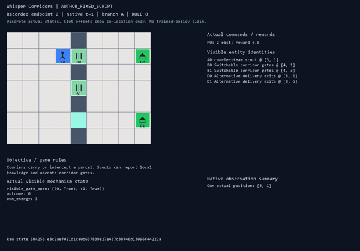
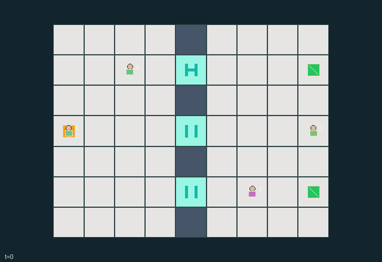

GI109 · Whisper Corridors

Original recording scope: Role view · Mode: Fixed-script demonstration
Additional generated state replay (different trajectory / full-state debug)

Roles 0/1 coordinate to deliver the parcel through one of two exits; roles 2/3 coordinate to intercept. Scouts provide expiring route intelligence and operate corridor gates.
Identity and original contract
4 independently actionable roles; 9 discrete commands per role; 145 native observation columns per role; original horizon 80 steps. Declared per-step reward range: -1 to 1. Observation regime: partially_observable.
Source SHA-256: f3e8cc66eed591d6b8e9a972a169267b3b9c5df22ec940d80cf9e1c7a370b3f9
The objective, rewards, population, map and horizon remain original. A preview is not a success claim.
Objective and gameplay
Roles 0/1 coordinate to deliver the parcel through one of two exits; roles 2/3 coordinate to intercept. Scouts provide expiring route intelligence and operate corridor gates.
Scouts can traverse closed gates, cache local gate/opponent facts and explicitly relay them. A teammate gains access to those facts, while opponents near the transmitter can intercept the same report. Gate toggles change others' movement; public lures can redirect behavior but are never ground-truth contacts.
- Public topology has north, middle and south gate corridors. Only nearby sensors reveal whether a gate is open.
- Scouts sense within Manhattan radius three and may cross closed gates; courier and interceptor sense radius one and require open gates.
- A scout may spend switch energy to toggle an adjacent ready gate. Switch cooldown lasts four states; waiting recovers energy.
- Scouts cache local gate and opposing main-role information with ages. Action 5 transmits a four-state snapshot to a teammate.
- An opponent within two cells of a scout when it broadcasts receives the same report. A later visit cannot retroactively intercept it.
- Each team has two public unverified activity signals. Either teammate can emit one; its marker is a claim, not the main role's actual current position.
- The courier delivers with action 7 at either public exit. The interceptor captures with action 7 within one cell. Capture wins simultaneous triggers.
- Reports and lures expire; moving opponents and toggled gates can invalidate old information. Rewards occur only on actual delivery or capture.
Ending: Interceptor action 7 within Manhattan distance one of the courier captures the parcel; otherwise courier action 7 on either exit delivers it. Capture has explicit priority if both triggers occur. Horizon 80 truncates as an unresolved draw.
What this game explores
Information, sensing & communication: Who knows a fact, when it was measured, and whether it was communicated are separate state variables. Test memory or communication using only the same role-visible evidence.
Commitment, exchange & governance: Promises consume time, liquidity, access or material. Separate an announced agreement from a binding commitment and from its eventual delivery; log cancellation and expiry too.
Joint transport & shared access: Positions, load geometry, occupancy and persistent access constrain whose action can succeed next. Distinguish physical handoff, shared controls and simultaneous force from a cosmetic cooperation label.
Team opposition & interception: Cooperation within a team can coexist with opposition between teams. Preserve team membership, capture and possession rules, and report each team's outcomes instead of assuming a single shared return.
These are questions supported by rule structure, not observed learning effects.
Play it: operating walkthrough
crucibles play --game gi109Keep Python running and open its printed address. Select this game, set a seed and press Create session. The game itself is always English.
Assign a role range to Host with Assign / take over, or Assign all roles. Invite a second participant with Create player invitation, then assign a disjoint subset. Every original role is available.
For every owned role choose a legal command and press Queue. Arrow keys / WASD queue a declared directional action for the current role camera when available. Space or Advance one joint step advances everyone together. Non-directional games use the selectors.
Unqueued roles use the labelled untrained uniform-legal policy. Take over or release roles before the next step without resetting. Full-state debug is privileged and permanently logged; role cameras preserve permissions. Close the session to retain logs. Server restart does not restore sessions.
Complete command reference
IDs and English labels exactly match the manifest. Availability depends on role, resources, location and phase. An available action can still have no productive effect.
0·wait; scouts recover switch energy
1·north
2·east
3·south
4·west
5·scout transmits current notebook
6·scout toggles an adjacent ready gate
7·courier delivers or interceptor attempts adjacent capture
8·emit finite unverified public team signal
Roles and capability identifiers
These original role names describe capabilities, not interchangeable skins. Check each owned role's legal selector before planning handoffs.
agent_0·courier-team scout
agent_1·courier
agent_2·interception-team scout
agent_3·interceptor
Information and observation permissions
Radar-style local sensing has Manhattan radius three for scouts and one for main roles, without wall occlusion. Only scouts see their own notebook. A radio message is accessible to its team and roles within radius two at the actual broadcast, until TTL expires. Public map reveals gate sites only. Unverified lures and public terminal outcome are separated from actual locally observed contacts.
The GIF is full-state debug and may reveal hidden entities or private state. Train on obs[agent], not the picture, state tree or another role's private row. Field slices and visibility are in the original manifest.
Reinforcement-learning integration
import jax
from crucibles_jaxmarl import make
env = make("gi109")
key = jax.random.PRNGKey(0)
key, rk, ak, sk = jax.random.split(key, 4)
obs, state = jax.jit(env.reset)(rk)
actions = env.sample_actions(ak, state)
obs, state, rewards, dones, info = jax.jit(env.step_env)(sk, state, actions)
done = dones["__all__"]Observations are float32 vectors of width 145; actions are scalar int32; masks have 9 entries. Supply all 4 roles each transition. Masked sampling is an engineering reference, not a trained learner.
step_env retains terminal data without reset. step performs outer autoreset and keeps terminal data in info["raw_state"] and info["raw_observation"]. Use dones["__all__"] for episode boundaries; separate completion, failure and time limit in analysis.
JIT or vmap equal identities and shapes. Split independent reset, policy and transition keys. Group different shapes explicitly; do not shrink the population or horizon. Host rendering stays outside training.
Training questions and fair evaluation
Define valid completion from the objective before fitting. Preserve original rewards and also report real deliveries/services, losses, resource state, unresolved episodes and per-role returns. Animation is not a reward signal.
Who knows a fact, when it was measured, and whether it was communicated are separate state variables. Test memory or communication using only the same role-visible evidence.
Promises consume time, liquidity, access or material. Separate an announced agreement from a binding commitment and from its eventual delivery; log cancellation and expiry too.
Positions, load geometry, occupancy and persistent access constrain whose action can succeed next. Distinguish physical handoff, shared controls and simultaneous force from a cosmetic cooperation label.
Cooperation within a team can coexist with opposition between teams. Preserve team membership, capture and possession rules, and report each team's outcomes instead of assuming a single shared return.
Compare memory, communication or centralized critics under matched actor information. Declare critic access; keep actor inputs role-filtered. Match partner/opponent distributions, masks, compute and checkpoint selection. Final tests never enter fitting or selection.
Independent training runs or source-pairing blocks are inferential units; episodes from one policy are not independent training replications. Save hashes, keys, versions, device, time and cost. Negative, zero, failed and indeterminate outcomes are valid. No trained checkpoint or target score is supplied.
Classification and evidence
Overlapping editorial labels are reading aids, not proof of novelty, difficulty, strategic equivalence or learning effects.
- Information, sensing & communication
- Evidence
manifest.task.interaction: Scouts can traverse closed gates, cache local gate/opponent facts and explicitly relay them. A teammate gains access to those facts, while opponents near the transmitter can intercept the same report. Gate toggles change others' movement; public lures can redirect behavior but are never ground-truth contacts.
- Evidence
manifest.task.observation_access: Radar-style local sensing has Manhattan radius three for scouts and one for main roles, without wall occlusion. Only scouts see their own notebook. A radio message is accessible to its team and roles within radius two at the actual broadcast, until TTL expires. Public map reveals gate sites only. Unverified lures and public terminal outcome are separated from actual locally observed contacts.
- Evidence
manifest.actions.8: emit finite unverified public team signal
- Commitment, exchange & governance
- Evidence
manifest.task.objective: Roles 0/1 coordinate to deliver the parcel through one of two exits; roles 2/3 coordinate to intercept. Scouts provide expiring route intelligence and operate corridor gates.
- Joint transport & shared access
- Evidence
manifest.task.objective: Roles 0/1 coordinate to deliver the parcel through one of two exits; roles 2/3 coordinate to intercept. Scouts provide expiring route intelligence and operate corridor gates.
- Evidence
manifest.task.interaction: Scouts can traverse closed gates, cache local gate/opponent facts and explicitly relay them. A teammate gains access to those facts, while opponents near the transmitter can intercept the same report. Gate toggles change others' movement; public lures can redirect behavior but are never ground-truth contacts.
- Evidence
manifest.task.observation_access: Radar-style local sensing has Manhattan radius three for scouts and one for main roles, without wall occlusion. Only scouts see their own notebook. A radio message is accessible to its team and roles within radius two at the actual broadcast, until TTL expires. Public map reveals gate sites only. Unverified lures and public terminal outcome are separated from actual locally observed contacts.
- Team opposition & interception
- Evidence
manifest.task.objective: Roles 0/1 coordinate to deliver the parcel through one of two exits; roles 2/3 coordinate to intercept. Scouts provide expiring route intelligence and operate corridor gates.
- Evidence
manifest.task.interaction: Scouts can traverse closed gates, cache local gate/opponent facts and explicitly relay them. A teammate gains access to those facts, while opponents near the transmitter can intercept the same report. Gate toggles change others' movement; public lures can redirect behavior but are never ground-truth contacts.
- Evidence
manifest.actions.7: courier delivers or interceptor attempts adjacent capture
Source, receipts and preview limits
The additional generated state GIF replays saved untrained legal actions through the original kernel. At most 25 actual endpoints include initial and terminal state; no invented interpolation. It is full-state debug, not the role observation. Where an original scene preview exists, it is displayed first with its own recorded information scope. The two recordings may use different trajectories and views.
Original source, observation slices, manifest and mechanism
Native receipt · Presentation receipt
Engineering passes do not establish learning. Nonzero floating differences remain recorded and undetermined; no new tolerance was introduced. Human scores remain unverified.